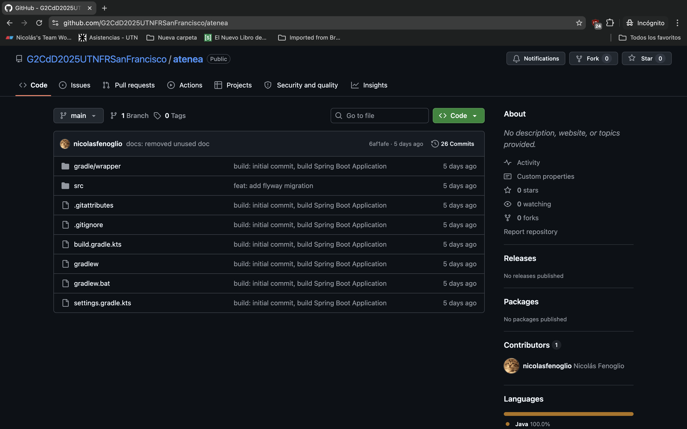
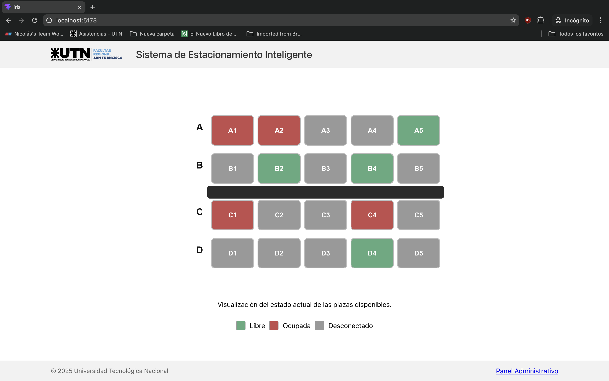
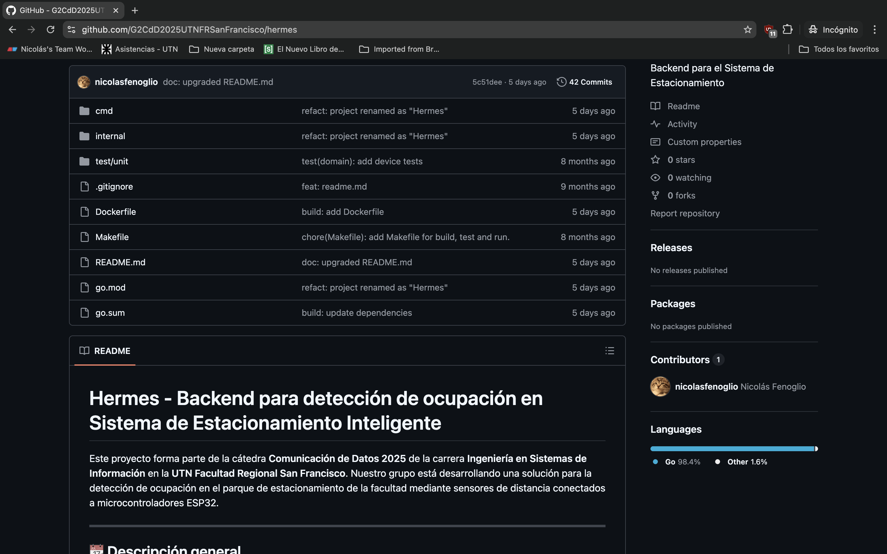
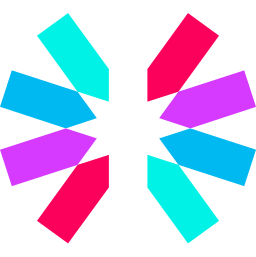

Mi nombre es Nicolás Fenoglio
Desarrollador Full StackDesarrollo sistemas y aplicaciones con foco en arquitectura, rendimiento y eficiencia.
Desarrollo sistemas y aplicaciones con foco en arquitectura, rendimiento y eficiencia.


Soy estudiante de Ingeniería en Sistemas de la Información y desarrollador full stack, con foco en backend. Empecé a programar de forma autodidacta, impulsado por la curiosidad de comprender el funcionamiento de los sistemas y el software que utilizaba a diario.
Desde entonces, trabajé en proyectos tanto individuales como en equipo, donde desarrollé experiencia construyendo soluciones, priorizando código claro, escalabilidad y buenas prácticas.
Actualmente, estoy buscando mi primera experiencia profesional en el sector IT, con ganas de sumarme a un equipo donde pueda seguir aprendiendo, enfrentar desafíos reales y aportar valor desde lo técnico. Siempre buscando aprender y crecer profesionalmente.

Atenea es una API REST desarrollada para la gestión de usuarios, sensores y plazas de estacionamiento. Implementa la lógica de negocio del dominio y expone endpoints para operaciones de administración y consulta. Además, incorpora comunicación en tiempo real mediante WebSockets para notificar cambios de estado a los clientes, e integra mensajería asincrónica con RabbitMQ para consumir eventos provenientes de sistemas externos.



Iris es una aplicación web orientada a la visualización y administración de datos en tiempo real. Implementa un mapa interactivo que refleja el estado de entidades dinámicas y un panel administrativo para la gestión del sistema. Combina el consumo de APIs REST para operaciones síncronas con WebSockets para la actualización continua de información, asegurando una interfaz reactiva y consistente.



Hermes es un servidor UDP diseñado para la recepción y procesamiento de datos provenientes de dispositivos externos. Utiliza un protocolo binario propio optimizado para minimizar el overhead y la latencia en la comunicación. Gestiona el parseo de paquetes, validación de datos y publicación de eventos hacia sistemas de mensajería como RabbitMQ para su posterior procesamiento.



Actualmente formo parte del Grupo de Investigación, Desarrollo e Innovación (I+D+I) en Calidad de Software de la Universidad Tecnológica Nacional F.R. San Francisco. En este rol, me he especializado en el modelo de calidad definido por la familia de normas ISO 25000, participando en la redacción de historias de usuario y la definición de requisitos no funcionales. Además, he trabajado en la interacción con modelos de lenguaje (LLM) en el marco de investigaciones orientadas a determinar cuál de estas tecnologías resulta más adecuada para asistir en el proceso de redacción de requisitos de calidad de software.
Me desempeño como desarrollador full stack independiente, participando en diversos proyectos colaborativos y personales. Formé parte del desarrollo frontend de una aplicación de comunidades orientada al ámbito laboral y la gestión de proyectos, inspirada en plataformas como Discord y Trello, la cual alcanzó una etapa avanzada de desarrollo. Asimismo, desarrollé plugins en Java para entornos de servidores, creando funcionalidades personalizadas e integrando tecnologías como MongoDB, Redis, y Docker, proyecto que llegó a producción antes de su cierre. Además, he creado múltiples aplicaciones y sitios web, en algunos casos desarrollando tanto el frontend como el backend. Debido a la naturaleza privada de estos proyectos, no es posible compartir el código, pero en conjunto reflejan una sólida experiencia práctica en el desarrollo de software.


 LinkedIn
LinkedIn
 Instagram
Instagram